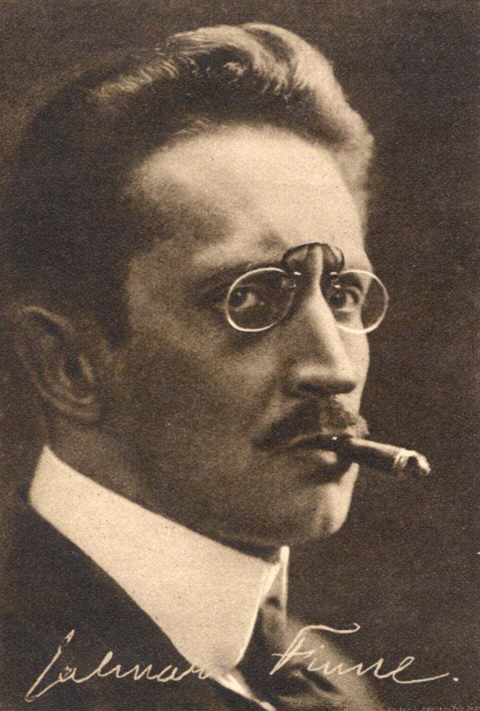

Jalmari Finne
Kunnollinen järjestys joutuu naurun koeteltavaksi.
Finnen Kiljuset muuttavat tavallisen tilanteen yhteiseksi hämmingiksi. Koominen vauhti tempaa mukaansa sekä lapset että aikuiset.
Etsi teokset kirjastostaElämä ja teokset
Jalmari Finne syntyi Kangasalla. Hän työskenteli teatterin ohjaajana ja johtajana sekä kirjailijana ja suomentajana. Hänen kiinnostuksensa ulottui myös historiaan ja sukututkimukseen.
Kiljusen herrasväki ilmestyi vuonna 1914 ja aloitti usean kirjan sarjan. Teatterityössä kehittynyt tilanteiden ja liikkeen taju näkyy kertomuksissa, joissa yhden perheen toiminta saa kokonaisen ympäristön sekaisin.
Tyyli ja teemat
Liioittelu, toisto ja äkillinen suunnanmuutos ovat komiikan keskeisiä keinoja. Aikuiset eivät hallitse tilannetta sen paremmin kuin lapset. Kertomus antaa luvan nauraa myös sille, mitä ympäristö pitää vakavana ja arvokkaana.
Perhe · Huumori · Kaaos
Aloita tästä
Kiljusen herrasväki
Kiljusten perheen tempaukset kasvavat mahdottomiin mittoihin. Sopii myös yhteiseen ääneen lukemiseen, kun äänten ja vauhdin annetaan vaihdella.
Poimi kertomuksesta hetki, jolloin pieni häiriö muuttuu kaikkia koskevaksi kaaokseksi.